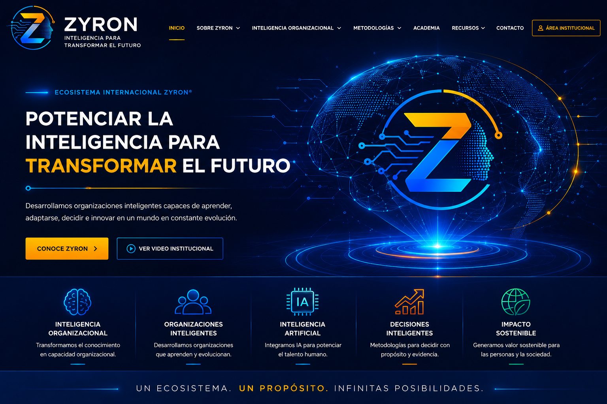
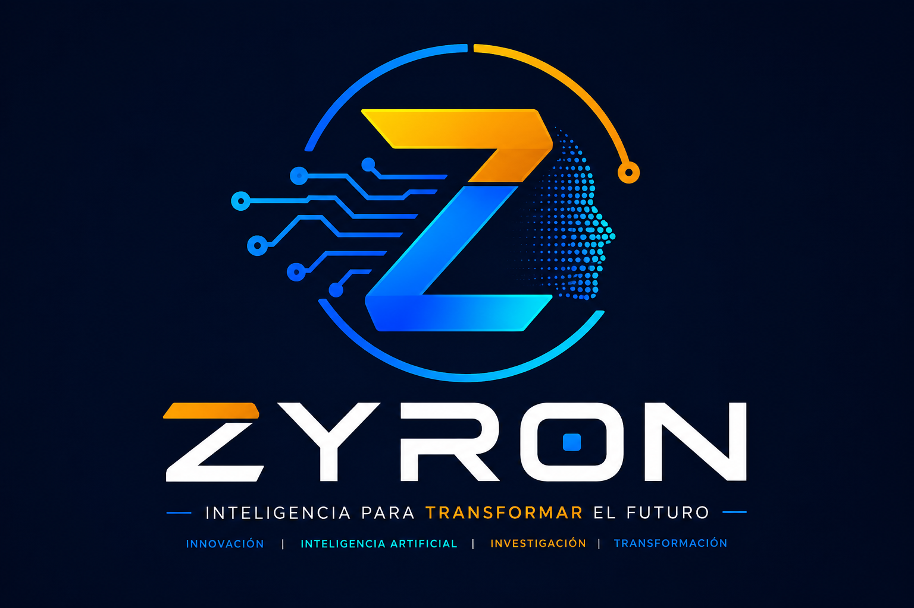
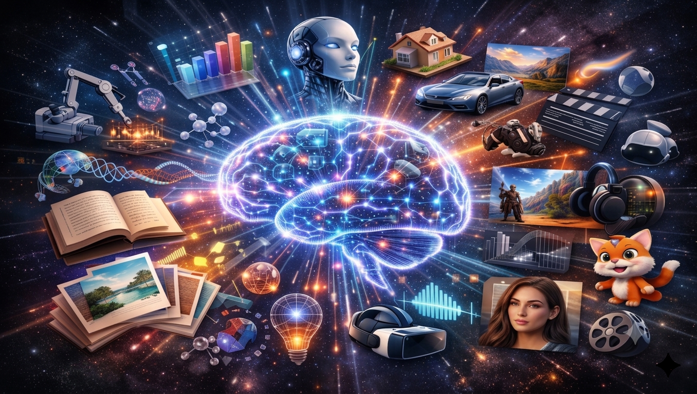
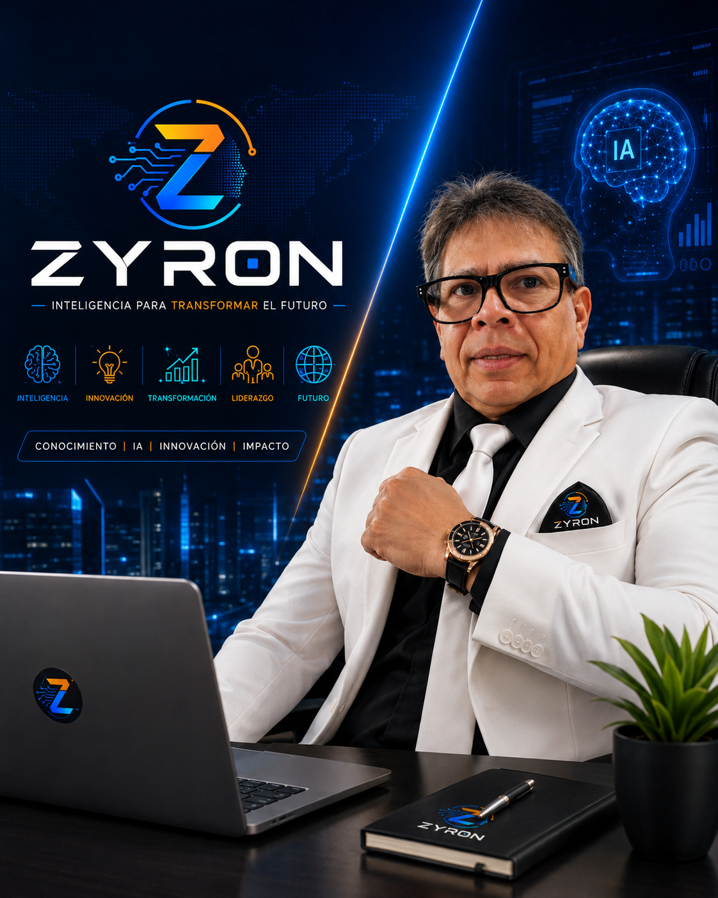
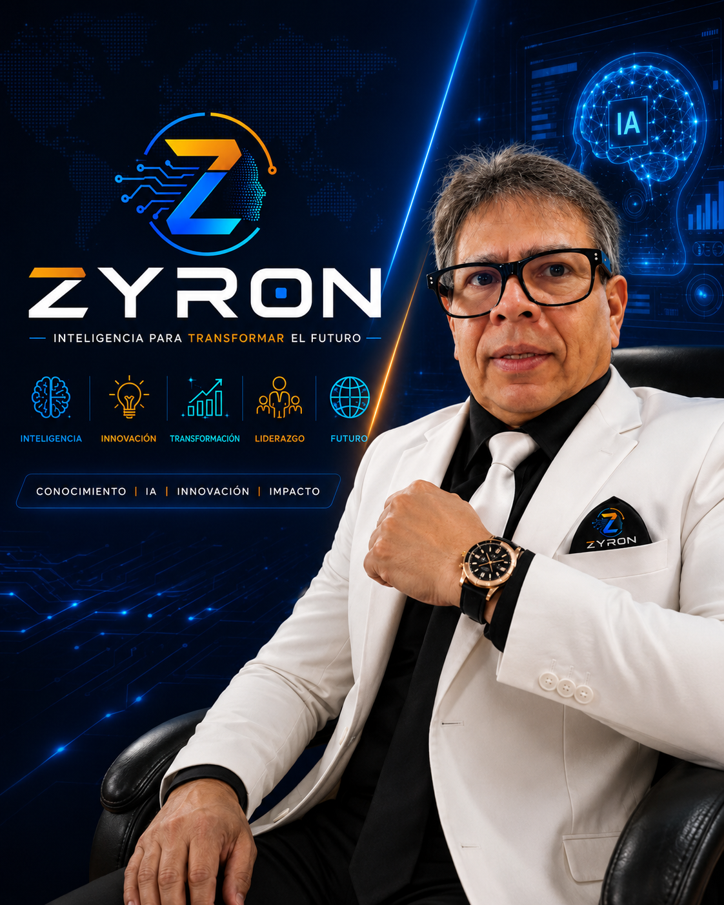

ZYRON Salud 0.2
Gestiona citas, expedientes, adjuntos y seguimiento en el entorno de pruebas.
Gestiona citas, expedientes, adjuntos y seguimiento en el entorno de pruebas.


Ecosistema Internacional ZYRON®
Desarrollamos organizaciones inteligentes capaces de aprender, adaptarse, decidir e innovar en un mundo en constante evolución.
Explora el catálogo de soluciones para tu organización.
ZYRON Salud 0.2 · Piloto listo para pruebas con datos ficticios
Transformamos el conocimiento en capacidad organizacional.
Desarrollamos organizaciones que aprenden y evolucionan.
Integramos IA para potenciar el talento humano.
Metodologías para decidir con propósito y evidencia.
Generamos valor sostenible para las personas y la sociedad.
Arquitectura del ecosistema
Integra identidad, propósito, visión, manifiesto fundacional, ética, rigor institucional y legado.
Ordena la decisión mediante Z-DNA, ZDM, principios rectores y un enfoque responsable de inteligencia.
Conecta metodología, academia, investigación, certificación, consultoría y ZYRON AI en una sola arquitectura.
Alcance institucional
ZYRON tendrá por objeto prestar servicios de consultoría, investigación, formación y desarrollo de soluciones en inteligencia organizacional, ingeniería industrial, neurociencia, neuromarketing, innovación y tecnología. Podrá realizar planificación prospectiva y estratégica; diagnósticos organizacionales; diseño y desarrollo de organizaciones inteligentes; control de gestión; calidad total y mejora continua.
Asimismo, podrá diseñar e implementar sistemas de indicadores, modelos de gestión, estructuras organizativas, organigramas, normas, políticas, manuales y procedimientos; analizar procesos y estados financieros para apoyar la toma de decisiones; y desarrollar proyectos de automatización, transformación digital, inteligencia artificial y gestión de datos. Aplicará conocimientos de neurociencia y neuromarketing al estudio del comportamiento, la comunicación, la experiencia de clientes y la toma de decisiones.
También podrá organizar e impartir entrenamientos, programas de capacitación, talleres, cursos, diplomados y otras actividades formativas, en modalidades presenciales, virtuales o mixtas, dirigidas a personas, empresas, instituciones y gobiernos. Podrá desarrollar investigación aplicada, realizar evaluaciones de aprendizaje y emitir constancias de participación o de aprovechamiento en las actividades formativas que organice.
Además, contará con un área de Resiliencia y Protección Estratégica, orientada a anticipar y atender situaciones que puedan afectar a las personas, la información, los activos y la continuidad de sus operaciones.
Centro institucional
 00
00Misión, visión, valores, propósito y doctrina rectora.
01Qué es ZYRON y cómo se define.
 02
02Por qué existe el Ecosistema ZYRON.

03La declaración permanente del ecosistema.
 04
04Cómo ZYRON desarrolla y transfiere conocimiento.
05El futuro que ZYRON busca construir.
 06
06Principios de conducta y creación de valor.
07La declaración fundacional de ZYRON.
 08
08Uso responsable de conocimiento e IA.
 09
09Componentes estratégicos de ZYRON.
 10
10Medición, radar y hoja de ruta.
11La Z orbita conocimiento, IA, decisiones y evolución institucional.
Factores Estratégicos
Integra estratégicamente la inteligencia humana, organizacional, colectiva y artificial. No se define como una empresa tecnológica, ni como una consultora tradicional, ni únicamente por la Inteligencia Artificial: se define por su capacidad para desarrollar Inteligencia Organizacional.
Depende de la capacidad de las personas y organizaciones para desarrollar inteligencia, aprender continuamente, adaptarse al cambio y transformar conocimiento en bienestar, innovación y desarrollo sostenible.
Este propósito constituye el eje permanente de todas las decisiones, investigaciones, metodologías, tecnologías y actuaciones del Ecosistema Internacional ZYRON®.
ZYRON desarrolla, integra y transfiere conocimiento mediante inteligencia artificial, innovación tecnológica, investigación aplicada y formación especializada para acelerar la transformación digital de clientes y aliados estratégicos.
La visión institucional de ZYRON es contribuir a construir un mundo más inteligente, próspero y sostenible.
Los valores no funcionan como decoración institucional: orientan la conducta, la relación con clientes y aliados, la investigación, el uso responsable de la tecnología y la creación de valor sostenible.
Creemos en la inteligencia como motor del desarrollo humano, organizacional y social. Trabajamos para desarrollar Inteligencia Organizacional mediante la integración del conocimiento, la innovación y la tecnología.
Toda decisión deberá respetar la dignidad humana, promover el bienestar colectivo, fortalecer la confianza y asegurar un uso responsable de la Inteligencia Artificial.
ZYRON Consulting®, Academy®, Research Institute®, Labs®, AI®, Government®, Health®, Education®, Data®, Innovation®, Ventures® y Foundation® forman una arquitectura que permite crecer sin perder identidad institucional.
El diagnóstico entrega informe ejecutivo, ZIQ®, nivel MMIO-Z™, radar de Inteligencia Organizacional, hoja de ruta, Plan Maestro de Evolución y benchmark ZYRON®.
El desafío
Tienen datos dispersos, pero no inteligencia aplicada para interpretar su realidad.
Adoptan herramientas sin convertirlas en estrategia, aprendizaje y capacidad instalada.
Operan tareas, pero no transforman la experiencia diaria en conocimiento institucional.
Deciden con urgencia, intuición o costumbre, no siempre con evidencia y propósito.
La Inteligencia Artificial no sustituye la Inteligencia Organizacional. La potencia.
Ecosistema ZYRON
Base fundacional, identidad, filosofía, propósito, visión y marco institucional.
02Modelos M-01 a M-06 para diagnosticar, medir, implementar, auditar y certificar.
03Cursos, talleres, seminarios, conferencias, entrenamientos y programas ejecutivos.
04Libros, papers, documentos técnicos, presentaciones y material descargable.
05Sistema internacional de reconocimiento para organizaciones inteligentes y evolutivas.
06Inteligencia artificial integrada al conocimiento, la decisión y el talento humano.
Modelo central
Analizar entorno, clientes, riesgos, oportunidades y realidad institucional.
Convertir experiencia, proyectos, errores y logros en conocimiento organizacional.
Tomar decisiones con propósito, evidencia, metodología y visión evolutiva.
Desarrollar organizaciones inteligentes capaces de adaptarse, innovar y trascender.
La Inteligencia Organizacional articula identidad, estrategia, aprendizaje, datos, liderazgo, procesos, tecnología y cultura para generar capacidad institucional real.
Observar, interpretar, aprender, decidir, ejecutar, medir y retroalimentar. Cada ciclo fortalece la evolución de la organización.
El modelo permite identificar brechas, niveles de madurez y prioridades de transformación mediante indicadores y diagnósticos.
Organizaciones inteligentes
Alinea propósito, cultura, liderazgo, ética y estrategia.
Convierte experiencia institucional en conocimiento transferible.
Responde al cambio con capacidades instaladas y decisiones rápidas.
Integra tecnología, datos e inteligencia artificial con sentido humano.
Inteligencia Artificial
Procesos más rápidos y consistentes sin sustituir el liderazgo humano.
Datos convertidos en evidencia para diagnóstico, priorización y decisión.
Soluciones para aprendizaje, gestión del conocimiento, atención institucional y estrategia.
Decisiones inteligentes
ADN de decisión ZYRON para mantener coherencia con identidad, cultura y estrategia.
Modelo de decisión ZYRON para problemas estratégicos, complejos y evolutivos.
Criterios de responsabilidad, transparencia, trazabilidad y bienestar sostenible.
Indicadores, diagnóstico y aprendizaje antes, durante y después de ejecutar.
Impacto sostenible
Transformación con impacto humano, institucional y social.
Ventajas sostenibles basadas en inteligencia, aprendizaje y adaptación.
Instituciones que trascienden por su capacidad de aprender y evolucionar.
Modelos oficiales
M significa Modelo Metodológico ZYRON: una estructura ordenada para diagnosticar, medir, madurar, implementar, auditar y certificar la Inteligencia Organizacional.
Evalúa el estado real de la organización, sus brechas, riesgos, oportunidades y nivel inicial de evolución.
Ventana informativa del modeloZIQ significa ZYRON Intelligence Quotient: índice oficial para medir, comparar y gestionar la Inteligencia Organizacional.
Ver definición ZIQModelo de madurez que distingue organizaciones reactivas, organizadas, inteligentes y evolutivas.
Ventana informativa del modeloRuta para instalar capacidades, gobernanza, aprendizaje, sistemas de decisión e innovación aplicada.
Formar equiposVerifica evidencia, consistencia, aprendizaje, mejora continua y preparación para certificación.
Ventana informativa del modeloSistema de reconocimiento para organizaciones que demuestran madurez inteligente y capacidad evolutiva.
Ventana informativa del sistemaRuta de transformación
Estas ocho etapas representan el ciclo completo de evolución de una organización: desde que toma conciencia de su realidad hasta que genera un impacto permanente.
Propósito: comprender profundamente la organización antes de emitir juicios o proponer soluciones.
Resultado: comprensión integral de la organización y del entorno donde opera.
Propósito: determinar el estado real de madurez mediante evidencia objetiva.
Resultado: diagnóstico integral con situación actual y prioridades estratégicas.
Propósito: construir la arquitectura de transformación para alcanzar el estado futuro deseado.
Resultado: Plan Maestro de Transformación alineado con identidad y propósito.
Propósito: construir capacidades, herramientas y soluciones necesarias para ejecutar la estrategia.
Resultado: capacidades técnicas, metodológicas y tecnológicas listas para implementar.
Propósito: poner en funcionamiento el modelo diseñado asegurando adopción efectiva.
Resultado: la organización comienza a operar bajo el nuevo modelo de gestión.
Propósito: lograr que todas las capacidades funcionen como un único sistema inteligente.
Resultado: ecosistema organizacional conectado, coordinado y orientado a valor.
Propósito: garantizar mejora continua mediante aprendizaje permanente e innovación.
Resultado: organización que aprende, mejora capacidades y se adapta al cambio.
Propósito: generar impacto sostenible en personas, organizaciones y sociedad.
Resultado: organización autónoma, inspiradora y capaz de dejar un legado duradero.
La transformación no termina con implementar tecnología; culmina cuando la organización desarrolla Inteligencia Organizacional y puede aprender, adaptarse y evolucionar por sí misma.
ZIQ
El ZIQ es el índice oficial del Ecosistema ZYRON para medir el nivel de Inteligencia Organizacional. Permite comparar capacidades, detectar brechas, priorizar inversiones, orientar certificación y medir evolución año tras año.
Dashboard activo
Madurez proyectada de inteligencia organizacional.
Procesos que pueden documentarse, medirse y automatizarse.
Tiempo estimado para obtener un diagnóstico ejecutivo inicial.
Modelos ZYRON conectados en una sola ruta de transformación.

ZYRON organiza indicadores, evidencias y decisiones en una lectura ejecutiva clara para que la dirección vea dónde actuar primero.
Campañas ZYRON

Una imagen central para presentar transformación, arquitectura de conocimiento y desarrollo de soluciones con inteligencia artificial.
Solicitar asesoríaEvidencias de clientes
Se ordenaron procesos académicos, indicadores y aprendizajes críticos para acelerar decisiones de gestión.
Se identificaron tareas repetitivas, riesgos operativos y oportunidades de atención inteligente al cliente.
Se priorizaron brechas de liderazgo, cultura, datos y medición con una hoja de ruta ejecutiva.
Videos ZYRON
Academia ZYRON
Estas modalidades constituyen una ruta progresiva para desarrollar talento, fortalecer competencias y potenciar la inteligencia de personas y organizaciones.
Propósito: desarrollar conocimientos específicos sobre un tema determinado mediante una formación estructurada y progresiva.
Resultado: el participante adquiere nuevos conocimientos y habilidades para desempeñar mejor sus funciones.
Propósito: aprender haciendo mediante ejercicios, casos reales y actividades prácticas.
Resultado: el participante desarrolla competencias mediante la experiencia práctica.
Propósito: actualizar conocimientos sobre tendencias, metodologías, investigaciones o buenas prácticas.
Resultado: los participantes amplían su visión sobre un tema específico.
Propósito: inspirar, sensibilizar y compartir conocimientos de alto impacto mediante exposiciones magistrales.
Resultado: los asistentes obtienen nuevas perspectivas e inspiración para impulsar cambios en sus organizaciones.
Propósito: desarrollar competencias profesionales mediante una preparación intensiva orientada al desempeño.
Resultado: el participante alcanza un nivel operativo para aplicar inmediatamente lo aprendido.

Propósito: desarrollar capacidades profesionales integrales mediante programas de formación avanzada compuestos por varios módulos especializados.
Resultado: el participante fortalece competencias estratégicas y obtiene una visión integral sobre un área del conocimiento.
Dentro del Ecosistema ZYRON, el Diplomado constituye la credencial académica de mayor nivel antes de acceder a programas ejecutivos, certificaciones especializadas o estudios de mayor alcance.
Ver diploma PDF Descargar diploma PDFPropósito: fortalecer capacidades directivas y estratégicas para la alta gerencia y líderes organizacionales.
Resultado: los participantes fortalecen su capacidad para liderar procesos complejos de transformación.
Propósito: validar formalmente que una persona domina una metodología, estándar o competencia desarrollada por ZYRON.
Resultado: el participante obtiene una credencial oficial conforme a los estándares del Ecosistema ZYRON.
Ver certificación internacionalPropósito: diseñar programas de capacitación personalizados para fortalecer equipos, áreas o toda la organización.
Resultado: la organización desarrolla nuevas capacidades alineadas con su estrategia, cultura y objetivos de transformación.
Consulta segura del diploma piloto ZYRON.
Introduce el código privado para consultar el diploma registrado.
Ruta progresiva: Conferencia → Seminario → Curso → Taller → Entrenamiento → Diplomado → Programa Ejecutivo → Certificación → Formación para Empresas.
Producción académica institucional
Seis obras de Inteligencia Artificial Aplicada para fundamentos, prompts, formación, laboratorios y casos profesionales.
Autor: Dr. Henry Izquierdo, PhD · Editor: ZYRON AI LAB
Conocer la colecciónDr. Henry Izquierdo, PhD

Explora el laboratorio por módulos visuales. Cada tarjeta abre una ficha dinámica con contenido esencial, navegación de retorno y ruta clara hacia recursos futuros.

Base oficial para aprender LoRAs, datasets, captions, entrenamiento, evaluación y flujos reales.
ZYRON, Henry Izquierdo y estilo corporativo ZYRON como activos visuales reutilizables.
Organización visual por ángulos, fondos, expresiones, iluminación, escenarios y propósito.
Arquitectura oficial para laboratorios ChatGPT, Codex, Sites, Work, Live, conectores, agentes y productividad.
Seis volúmenes de Inteligencia Artificial Aplicada para aprendizaje y práctica profesional.
Integra plataformas, conocimiento, agentes, investigación y aplicaciones. Su primera línea es el Ecosistema Inteligente OpenAI.
Catálogo técnico para investigar, evaluar y documentar APIs, SDKs e integraciones reutilizables.
Las tarjetas principales abren contenido dentro de esta misma página. Los módulos futuros conservan su página en proceso de creación con botones de regreso.
Qué aprenderás: cómo funciona la inteligencia artificial generativa, qué es un modelo base, cómo se adapta mediante LoRAs y cuál es el flujo completo desde los datos hasta la generación de resultados.
Objetivo: comprender los principios fundamentales que sustentan el entrenamiento de modelos personalizados.

Qué aprenderás: cómo CPU, GPU, VRAM, RAM, almacenamiento y nube influyen en tiempo de entrenamiento, calidad del modelo y consumo de recursos.
Objetivo: seleccionar correctamente el hardware según el tipo de proyecto y presupuesto.

Arquitectura: biblioteca interactiva para organizar herramientas de inteligencia artificial como centros de conocimiento, recomendación y comparación ZYRON AI LAB.
El Ecosistema IA queda preparado para documentar, comparar y recomendar herramientas sin convertirse en una lista de enlaces.
Las herramientas con estado provisional todavía no forman parte de las recomendaciones verificadas de ZYRON.
Ejemplo visual de integración entre ChatGPT, comunicación corporativa e identidad ZYRON.

Objetivo: esta arquitectura permite agregar nuevas herramientas, fichas y revisiones sin reorganizar el diseño del AI LAB.

Qué aprenderás: cómo construir conjuntos de imágenes consistentes para que una LoRA aprenda identidad, estilo y variaciones útiles.
Objetivo: crear datasets consistentes que produzcan modelos de alta calidad.

Qué aprenderás: cómo describir cada imagen para que el modelo aprenda rasgos, estilo, contexto y atributos reutilizables.
Objetivo: optimizar el aprendizaje del modelo mediante descripciones precisas y consistentes.

Qué aprenderás: cómo configurar y ejecutar entrenamientos de LoRAs controlando calidad, estabilidad y tiempo.
Objetivo: entrenar modelos personalizados optimizando calidad, estabilidad y tiempo.
Qué aprenderás: cómo identificar si una LoRA está funcionando, se sobreentrenó o necesita correcciones.
Objetivo: garantizar que cada modelo cumpla estándares profesionales antes de ser utilizado.

Qué aprenderás: cómo construir flujos completos de generación de contenido para imagen, video, automatización y web.
Objetivo: diseñar flujos de trabajo reutilizables y escalables para producción.

Qué aprenderás: cómo aplicar el laboratorio a productos reales de identidad visual, academia, biblioteca, video y agentes inteligentes.
Objetivo: construir una identidad visual consistente y reutilizable para toda la plataforma ZYRON.
Qué aprenderás: cómo documentar cada cambio realizado en modelos, datasets, prompts, configuraciones y resultados.
Objetivo: mantener trazabilidad completa del laboratorio y facilitar la mejora continua.

Objetivo: organizar documentación oficial sobre prompt engineering, modelos de IA, LoRAs, agentes inteligentes, automatización y modelos multimodales dentro de ZYRON AI LAB.
Preparación futura: cada documentación oficial podrá convertirse en PDF, almacenarse localmente y complementarse con resúmenes, ejemplos y casos de uso elaborados por ZYRON.
Centro de Investigación OpenAI
 Investigación y Experimentación
Investigación y Experimentación
 Benchmarks y Métricas
Infraestructura Cloud
Repositorio de Activos
Benchmarks y Métricas
Infraestructura Cloud
Repositorio de Activos
Objetivo: que ZYRON no dependa de imágenes aisladas, sino de un sistema capaz de producir identidad visual consistente, aprendizaje documentado y recursos reutilizables para la web, redes sociales, formación, consultoría y presentaciones institucionales.
Recursos descargables
Ser la organización que potencia la inteligencia de personas y organizaciones para construir un futuro más inteligente, próspero y sostenible.
Área institucional

FOUNDER & CEO
Chief Executive Officer · ZYRON AI
Dirección estratégica, Inteligencia Organizacional, consultoría, formación ejecutiva e investigación aplicada.

Personas que hacen posible ZYRON
![C/G/S José Rafael Jaramillo]()
Director de Resiliencia y Protección Estratégica de Riesgos
![Ing. Carlos Mora]()
![Ing. Rosemery Izquierdo]()
Gerente Académico · ZYRON
Gestión académica, formación y transferencia de conocimiento dentro del Ecosistema ZYRON.
Asesoría estratégica
Contacto comercial
 Experto en IA
Experto en IA